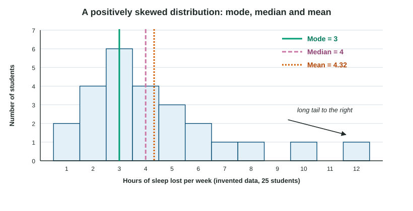

Descriptive Statistics
Descriptive statistics summarize a set of numbers.
Part 1 · Hook
Why this matters
Part 2 · Before you start
What this builds on
Part 3 · Prerequisite check
Quick check before you start
1. Which kind of data is a list of reaction times in milliseconds?
- Quantitative data
- Qualitative data
- A Likert scale
- A case study
Show the answer
Numbers such as times, scores and counts are quantitative data.
- Correct: Quantitative data:
- Qualitative data:
- A Likert scale:
- A case study:
2. A scatterplot of hours studied against quiz scores shows points rising to the right. What does this show?
- A positive correlation
- A negative correlation
- No correlation
- That studying causes higher scores
Show the answer
Points rising together show a positive correlation, which does not by itself show cause.
- Correct: A positive correlation:
- A negative correlation:
- No correlation:
- That studying causes higher scores:
Part 4 · See it
See it first

Part 5 · Step by step
How it works, step by step
- Add every value and divide by how many there arethe mean, which uses every value and so moves toward any outlier
- Put the values in order and take the middle one (or the average of the two middle ones)the median, which stays with the typical values even when there are outliers
- A few extreme values stretch one side of a distributionthe distribution is skewed and the mean moves toward the tail, so the median is the better summary
- Scores sit far from the meanthe range and the standard deviation are large: more variation
Part 6 · Key ideas
Key ideas
- Central tendency: the mean (, the total divided by the count), the median (the middle value in order) and the mode (the most frequent value). Two peaks make a bimodal distribution.
- An outlier pulls the mean toward it. In a skewed distribution the mean sits toward the tail, so the median describes the typical case better.
- Variation: the range is highest minus lowest; the standard deviation is roughly the typical distance of scores from the mean.
- A frequency distribution counts how often each value or range occurs; a histogram shows it as touching bars.
Part 7 · Misconception
A common mistake
The wrong idea: The mean is always the best "average", and a negative skew means the scores are low.
What actually happens: With outliers or skew, the median is usually the better summary. Skew is named for the tail: a negative skew has a tail toward the low values, often because most scores are high.
Part 8 · Check yourself
Check yourself
Exam-style questions. Anything you miss goes into your review queue.
1. Five students reported how many hours they slept the night before a test: 4, 7, 5, 8 and 6. What is the mean number of hours?
Type a number. No calculator needed: work it out by hand, as on the exam.
Show the answer
- Answer: 6
2. In a memory test, five participants recalled 3, 9, 4, 15 and 7 words. What is the median number of words recalled?
Type a number. No calculator needed: work it out by hand, as on the exam.
Show the answer
In order: 3, 4, 7, 9, 15. The middle (third) value is 7.
- Answer: 7
3. A store reports the "average" income of its customers. A few customers are billionaires. Which measure would best describe a typical customer’s income?
- The mean, because it uses each customer’s income
- The median, because extreme values barely move it
- The range, because it covers the lowest and highest incomes
- The standard deviation, because it shows variation
Show the answer
Outliers pull the mean toward them. In a skewed distribution, the median better describes the typical case.
- The mean, because it uses each customer’s income: Using every value is why the few billionaires pull it far up.
- Correct: The median, because extreme values barely move it: Right: the median depends on the middle, not the extremes.
- The range, because it covers the lowest and highest incomes: The range measures spread, not a typical value.
- The standard deviation, because it shows variation: Standard deviation measures spread, not a typical value.
Data
Reaction times with an outlier
| Reaction time (ms) | Number of trials |
|---|---|
| 280 | 2 |
| 300 | 4 |
| 320 | 3 |
| 900 | 1 |
4. What is the mean reaction time across all 10 trials, in milliseconds?
Type a number (ms). No calculator needed: work it out by hand, as on the exam.
Show the answer
Total:
- Answer: 362 ms
5. What is the median reaction time, in milliseconds?
Type a number (ms). No calculator needed: work it out by hand, as on the exam.
Show the answer
In order: 280, 280, 300, 300, 300, 300, 320, 320, 320, 900. The two middle values (5th and 6th) are both 300, so the median is 300 ms.
- Answer: 300 ms
6. Which statistic gives the better summary of this participant’s usual reaction time, and why?
- The median, because the 900 ms sneeze trial pulls the mean up
- The mean, because it uses each trial, including the 900 ms one
- The range, because it shows the fastest and slowest trials
- The mode and the mean are equal, so either works
Show the answer
The median (300 ms) sits with the typical trials; the mean (362 ms) is higher than nine of the ten trials because of a single outlier.
- Correct: The median, because the 900 ms sneeze trial pulls the mean up: Right: one outlier moves the mean far more than the median.
- The mean, because it uses each trial, including the 900 ms one: Including the outlier is exactly why the mean misleads here.
- The range, because it shows the fastest and slowest trials: The range describes spread, not a usual value.
- The mode and the mean are equal, so either works: The mode is 300 and the mean is 362; they are not equal.
Part 9 · Summary
Summary
Part 10 · Up next
What comes next
Part 11 · Connections